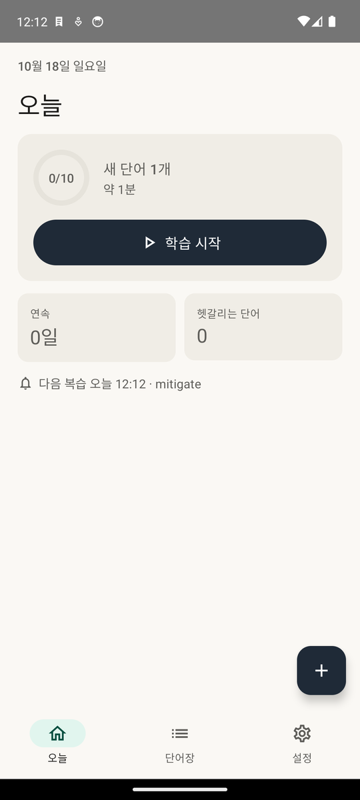
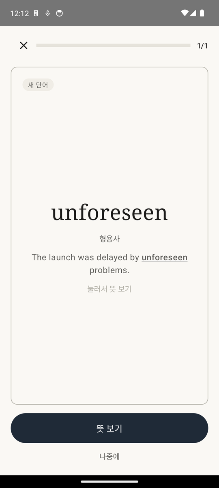
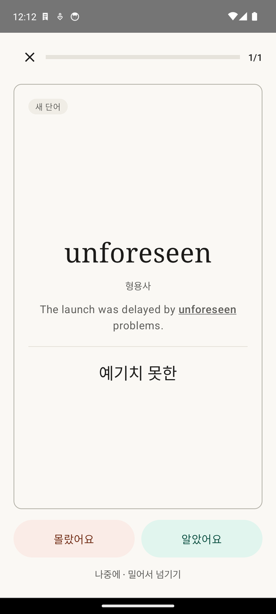
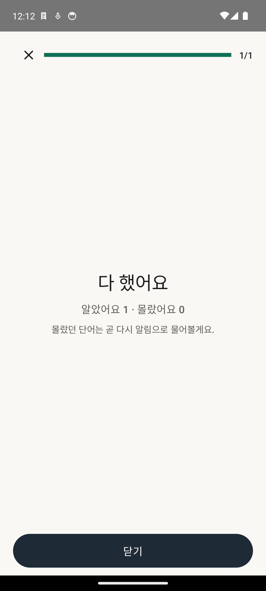
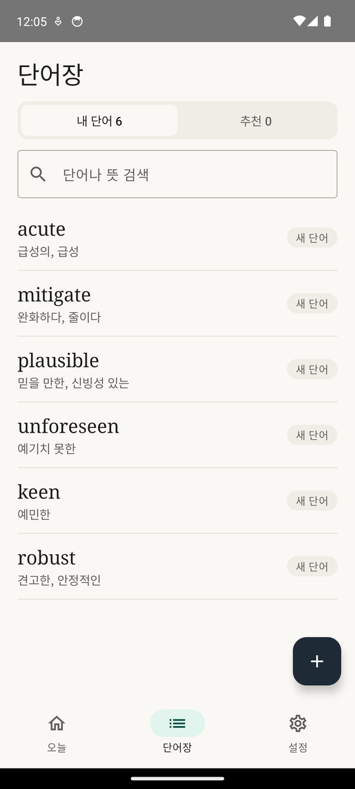
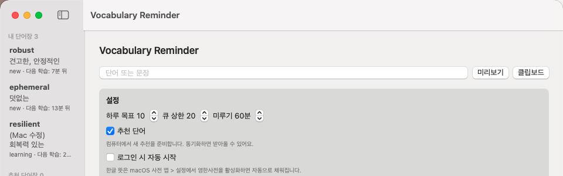
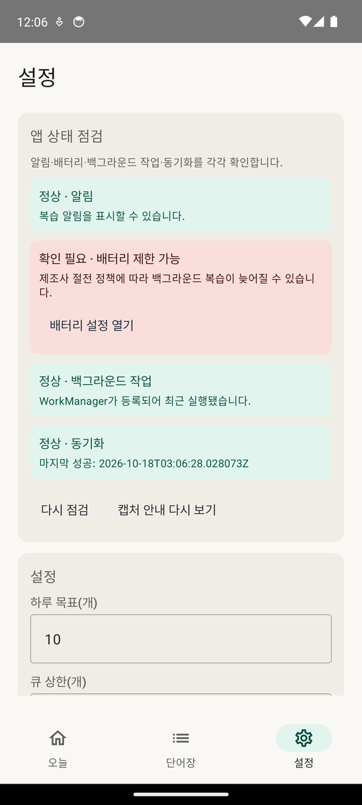

학습 시작을 누르면 카드가 한 장씩 나옵니다. 앞면에는 단어와 저장할 때의 문장이 있습니다.
뜻을 떠올린 뒤 카드를 누르거나 뜻 보기를 누릅니다.
몰랐어요 또는 알았어요를 누릅니다. 뜻을 본 뒤에는 카드를 왼쪽(몰랐어요)이나 오른쪽(알았어요)으로 밀어도 됩니다. 지금 답하기 어려우면 나중에.
복습할 단어가 없을 때는 헷갈리는 단어 연습이 나옵니다. 연습은 복습 일정을 바꾸지 않습니다.

오늘

앞면: 단어와 문장

뒷면: 뜻 확인 후 답하기

끝나면 결과
단어장
저장한 단어가 최근 것부터 나옵니다. 위쪽에서 내 단어와 추천을 바꾸고, 검색창에 단어나 뜻 일부를 넣어 찾습니다. 단어를 누르면 상세 화면이 열리고, 삭제도 거기서 합니다.
상태 표시
새 단어
저장했고 아직 복습 전
배우는 중
복습하는 중, 간격이 늘어나는 단계
헷갈림
최근에 자주 틀렸거나 다시 배우는 중
익힘
3주 이상 간격으로 기억하고 있음
보류
잠시 복습에서 뺀 단어
추천 단어
서버가 내가 저장한 단어와 문장을 보고 배울 만한 단어를 골라 둡니다. 추천 목록에서 단어를 열어 시작하기를 누르면 복습에 들어가고, 이미 아는 단어는 알아요, 관심 없으면 관심 없음을 누릅니다. 추천 알림에도 같은 버튼이 있습니다. 추천은 기존 복습이 밀려 있지 않을 때 조금씩 들어옵니다.

단어장
Mac 앱
메뉴 막대의 책 아이콘으로 엽니다. Mac에서 저장한 단어도 폰과 같은 단어장에 들어가고, Mac에서도 복습 알림이 옵니다.
Mac에서 저장하는 세 가지 방법
오른쪽 클릭: 아무 앱에서 단어를 선택하고 오른쪽 클릭 → 서비스 → Vocabulary Reminder에 추가. 처음 한 번은 앱 설정의 진단에서 앱에서 설치를 눌러 서비스를 켭니다.
단축키: 단어를 복사(⌘C)한 뒤 ⌘⌥V를 누르면 저장 창이 열립니다.
창에서 직접: 메뉴 막대 아이콘 → 최근 저장 단어를 열고 위쪽 칸에 입력한 뒤 미리보기.
Mac의 영한사전(사전 앱 → 설정)을 켜 두면 뜻이 더 잘 채워집니다.

Mac 앱 창(테스트 단어)
동기화, 업데이트, 백업
동기화
폰과 Mac은 집의 Mac Studio에서 돌아가는 서버를 통해 자동으로 맞춰집니다. 서버 주소나 비밀번호를 입력할 필요가 없고, 폰에 VPN을 깔 필요도 없습니다. 인터넷이 끊긴 동안 저장하거나 복습한 것은 기기에 쌓였다가 연결되면 올라갑니다.
Android 앱 업데이트
새 버전이 나오면 앱 위쪽에 알림 띠가 뜹니다. 업데이트를 누르면 내려받아 설치 화면이 열립니다. 처음 한 번은 이 출처 허용을 켜야 합니다. 설정 탭의 앱 업데이트에서 직접 확인할 수도 있습니다. 단어 데이터는 업데이트해도 그대로입니다.
백업
서버가 매일 단어장 전체를 백업하고, 같은 날 바뀐 내용이 있으면 그날 백업을 새로 만듭니다. 백업은 Mac Studio와 함께 Google Drive와 iCloud Drive의 VocabReminder Backups 폴더에도 저장되고, 30일치를 보관합니다.
Android 폰↔
Mac Studio 서버 (Tailscale 주소)↔
Mac 앱
매일 백업 → Google Drive, iCloud Drive
설정
앱 상태 점검: 알림 권한, 배터리 제한, 백그라운드 작업, 마지막 동기화를 한눈에 봅니다. 빨간 항목에는 바로 고칠 수 있는 버튼이 있습니다.
하루 목표: 하루에 복습할 단어 수입니다. 오늘 화면의 링이 이 숫자를 기준으로 찹니다.
큐 상한: 한 번에 쌓아 둘 복습 알림 수입니다. 밀린 복습이 많으면 나머지는 뒤로 나눠 보냅니다.
잠자는 시작·끝: 이 시간에는 알림을 보내지 않고 끝난 뒤로 미룹니다.
캡처 안내 다시 보기: 처음 열었을 때 나온 저장 방법 안내를 다시 봅니다.

설정
문제가 생기면
복습 알림이 오지 않아요
설정 탭의 앱 상태 점검을 보세요. 알림 권한이 꺼져 있거나 배터리 제한에 걸려 있으면 그 항목의 버튼으로 바로 고칠 수 있습니다. 설정의 잠자는 시간에는 알림이 미뤄집니다.
뜻이 비어 있거나 "뜻을 찾는 중"으로 나와요
뜻은 서버에서 채워서 동기화로 내려옵니다. 폰이 인터넷에 연결돼 있는지, 집의 Mac Studio가 켜져 있는지 확인하세요. 문장 기반 뜻은 LM Studio도 켜져 있어야 합니다. 급하면 상세 화면에서 직접 입력해도 됩니다.
폰에서 저장한 단어가 Mac에 안 보여요
Mac 앱에서 지금 동기화를 누르거나 잠시 기다리세요. 설정 탭의 앱 상태 점검에서 마지막 동기화 시각을 볼 수 있습니다.
잘못 저장한 단어를 지우고 싶어요
단어장에서 단어를 눌러 상세 화면을 열고 맨 아래의 삭제를 누릅니다. 삭제는 다른 기기에도 반영됩니다.